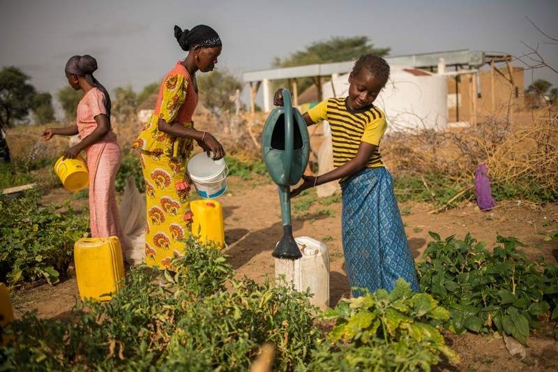
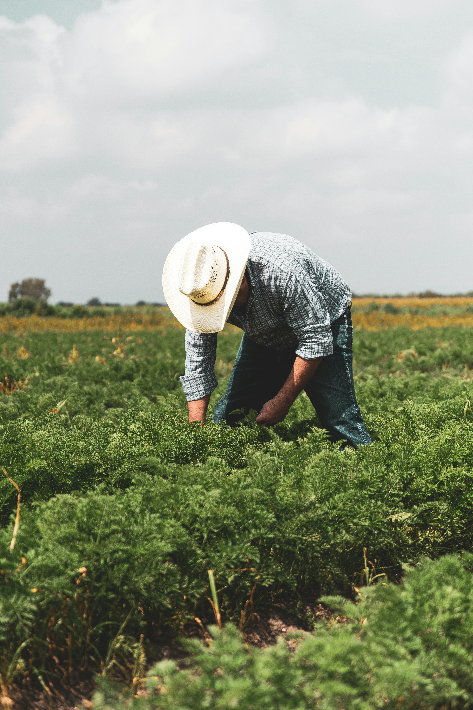

About AgroLens Africa
AgroLens Africa is a cutting-edge platform designed to empower African farmers by simplifying plant disease identification. By using your smartphone camera, farmers can upload or capture images of their crops and instantly receive:
- Accurate identification of the plant species (Kutambua mmea)
- Detection of possible diseases (Kugundua magonjwa)
- Effective remedies and treatments derived from reliable sources like Wikipedia
This tool helps native farmers who may not know English plant names or treatments by providing information in an intuitive interface.
Developer: Lameck Kipsang
Registration Number: COM/M/0016/2022

